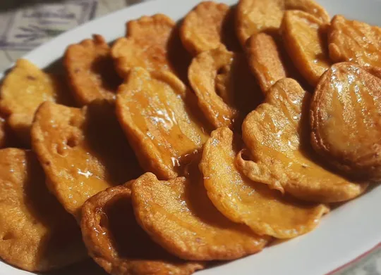
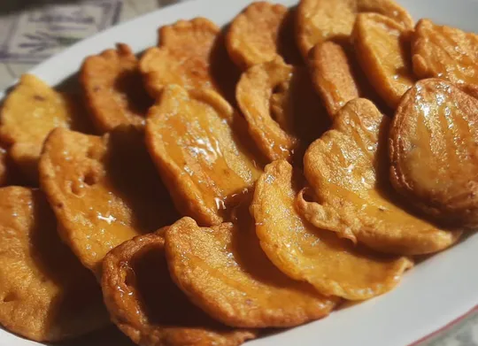

¿Te gusta el dulce? Porque en las islas Canarias hay una lista interminable de postres riquísimos
que no te puedes perder si vienes a Gran Canaria.
La cocina canaria recoge influencias de América Latina, en concreto de Venezuela, con quien guarda buenas
relaciones desde mediados del siglo XIX. También hereda muchas recetas de los guanches, conocidos por ser
los antiguos canarios.
La repostería es una de las debilidades del isleño, no hay comida sin postre, y lo ideal es que éste, sea
algo dulce... En cuanto a los ingredientes, el millo ya sea entero o molido, la almendra, la miel y las frutas,
son la base de los postres canarios.
No hay comida canaria, que se precie sin un buen postre a base de gofio, miel o plátanos,
acompañado ya sea de un buen licor o de ron de la tierra.
Hay que comentar que la repostería, al igual que la gastronomía no es un campo cerrado, cada persona, ya sea
a través de su familia o simplemente por su propia iniciativa, puede utilizar diversos ingredientes, y
modificar la presentación y el resultado final.
 

Dulces Artesanos de Guia Antoñita
 Calle Pérez Galdós, 40
Calle Pérez Galdós, 40
 928882188
928882188
Dulcería Nublo en Tejeda
Calle Dr. Domingo Hernández Guerra, 15
928666030
Panadería Pastelería Pulido
Calledel Agua, 15
928661227
Bizcochos de Moya Doramas, S.L.
Calle Bolivia, 3
928620080